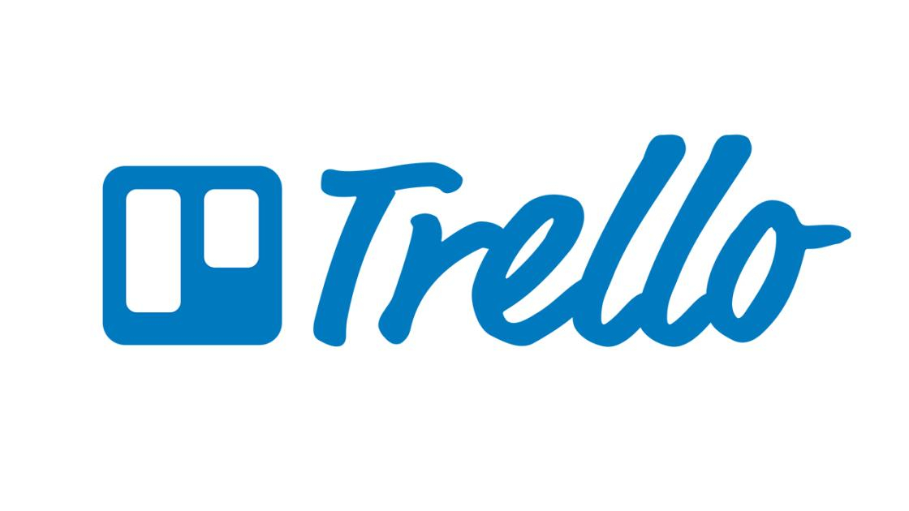

Project Management:
Trello
What is Trello? Trello is an app that is able to keep projects organized from start to finish, track progress whilst ensuring that nothing slips through the cracks. Trello is pretty customizable to the demands of any project, from simple to-do lists to complex workflows.
My experiences using it: I am actually quite impressed with the app. It has a simple layout and you can access the app from multiple devices. I like it so much that I use it for pretty much all my projects for my modules. I found that when working on a project with my friends, I can share the board and everyone is able to be on the same page quickly which is pretty good. I just wished that it did not use a huge internet bandwidth. My internet is sometimes not too stable so the app lags abit.
Asana

What is Asana? Asana is an app that is similar to Trello. It is Asana is a user-friendly project management tool that will meet most peoples needs. While not quite as advanced as Trello, its interface is very simple to use which is why some people actually prefer using it compared to Trello.
My experiences using it: I myself do not have it intalled in my computer, however, I do have friends who use it. So I tried it out on their laptops and it seemed pretty similar to Trello. This meant that I was able to get use to it pretty quickly. I also liked the fact that tasks are able to be displayed in gantt charts. However I noticed that the file management was not as good as compared to Trello. This was a huge bummer as I have lots of files that I use for school.
Sticky Notes
What is Sticky Notes? Sticky Notes is an app for windows users. Just imagine a digital version of post-it notes. Very similar versions can be found on almost all devices from Macbooks to Android phones. They all do basically the same thing which is to type down notes or reminders. The only difference between them is certain functions and their names.
My experiences using it: I personally use it on both my laptop and my phone. I find it very effiecient and straight foward to use. The fact that you also dont waste paper is also a plus for me.